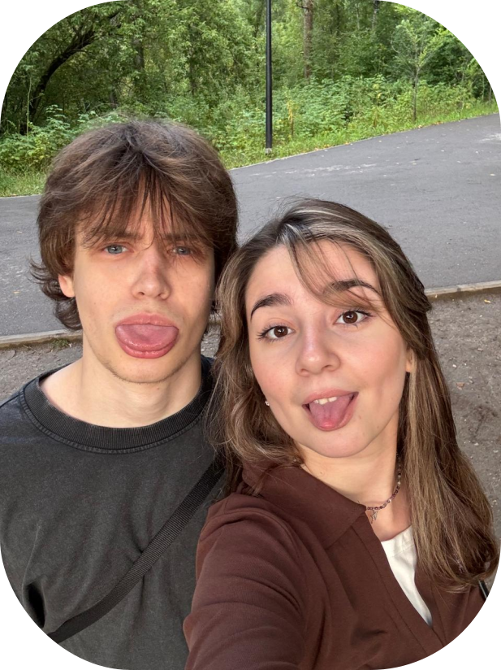

<!DOCTYPE html>
<html lang="en">
<head>
    <body style="background-color: rgba(167, 194, 192, 0.578);"></body>
    <meta charset="UTF-8">
    <meta name="viewport" content="width=device-width, initial-scale=1.0">
    <title> Моя визитка </title>
    <link rel="stylesheet" href="/css/main.css">
</head>
<body>
    <div class="wrapper"></div>
    <header class="container">
<span class="logo"> Моя визитка</span>
<nav>
<ul>
    <li><a hrev="#"> Обо мне
</a>  </li>
    <li><a hrev="#"> Будущее
</a>  </li>
<li class="btn"><a hrev="#">Контакты</a>  </li>
</ul>

</nav>
    </header>
  <div class="hero container">
    <div class="hero--info">
        <h2>Это я </h2>
        <h1>Косоухов Никита Михайлович
гр. 8К53</h1>
    </div>
    
  </div>
  </div>
</body>
</html>


<div>
    <p>Почему на программу ТОП-IT должны взять именно меня?</p>
    <p> Еще год назад я и представить себе не мог, что окажусь в ВУЗе такого высокого уровня на направлении, о котором многие только мечтают. 
   Усердная подготовка к ЕГЭ позволила мне «прыгнуть выше головы», из-за чего спектр возможных направлений многократно для меня расширился.
    Так, я оказался на программной инженерии, однако в отличие от большинства поступил по физике.
     Мои знания в сфере IT близки к нулю, даже этот сайт я сделал по видеоурокам на youtube, однако именно в этом мой плюс.
      Я считаю себя трудолюбивым, я умею подстраиваться под изменяющуюся среду, выполнять задачи, к которым не был готов ранее.
       Я достаточно коммуникабелен, умею работать в большом коллективе и даже считаю себя хорошим лидером.
        Я готов много работать над своими теоретическими знаниями, отсутствие опыта- не помеха, а программа ТОП-IT может помочь мне реализовать полученные знания на качественной практике.</p>
</div>

   <p> Каким вы видите свое будущее в сфере ИТ?</p>
  <p> Ближайшее будущее вижу полностью погруженным в обучение, обрастание новыми навыками и умениями.
     Очень хочу стать настоящим «мастером» своего дела, чтобы впоследствии ( через много-много лет) стать руководителем IT отдела крупной компании.
      Я буду брать на себя самые сложные и нестандартные задачи, смогу грамотно разделять работу между сотрудниками, контролировать качество её исполнения</p>
<video width="700" controls><source src="C:\Users\123\Desktop\визитка\mp4\video5337253269150401521.mp4" type="video/mp4">Ваш браузер не поддерживает HTML5 видео.</video>
<p>Контакты</p>
<p>+7-996-704-59-14</p>
<p>nikitka@gmail.com</p>